Euklidovská geometrie
Fraktál
Vlastnosti fraktálů
- Detailní struktura při velkých zvětšeních — zoom nikdy „nedojde“.
- Příliš složité pro euklidovskou geometrii — nelze je popsat konečným počtem úseček.
- Soběpodobnost — celek je tvořen zmenšenými kopiemi sebe sama.
- Jednoduchá rekurzivní definice — složitý tvar vzniká opakováním jednoduchého pravidla.
- Fraktální dimenze se liší od topologické — bývá neceločíselná.

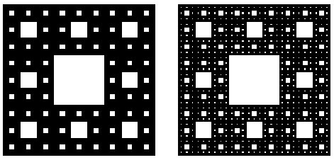
Čínské zelí (romanesco)

Fraktály v přírodě a matematice
Sněhová vločka
Fraktály v komplexních číslech
Komplexní rovina je ideální prostor pro iteraci jednoduchého vzorce — a vznikají v ní nejznámější fraktály.
Algoritmus pro Mandelbrotovu množinu
Mandelbrotova množina: soběpodobnost
Jiné iterované fraktály
Stačí změnit jedno znaménko nebo přidat absolutní hodnotu.
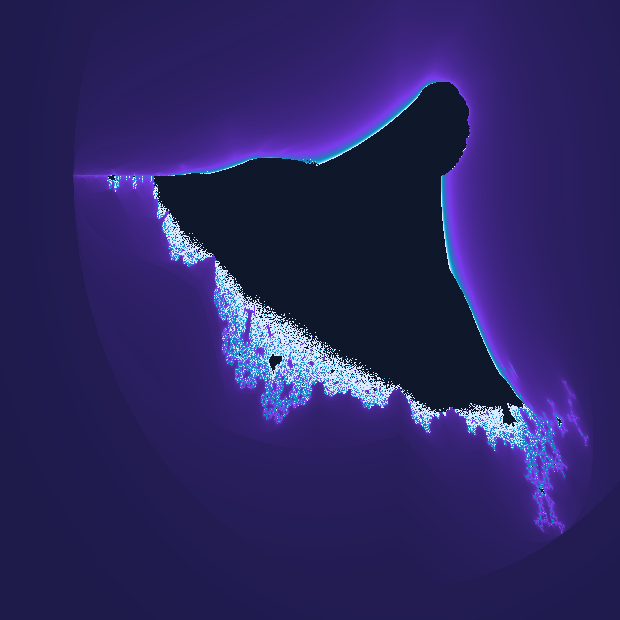
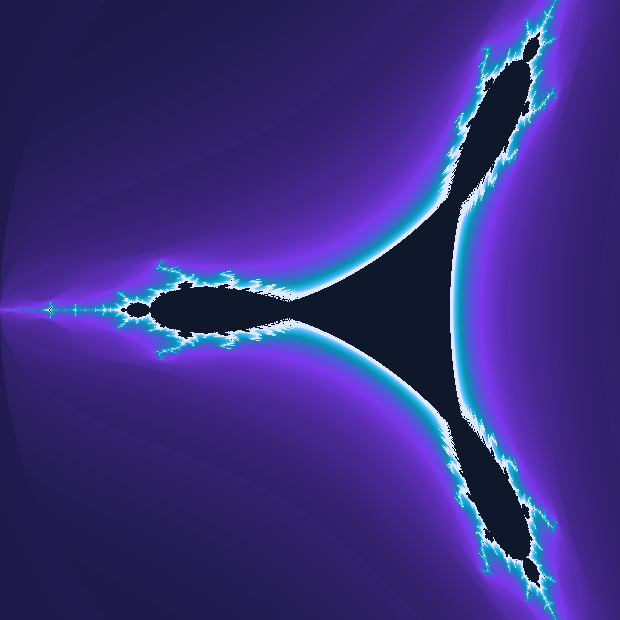
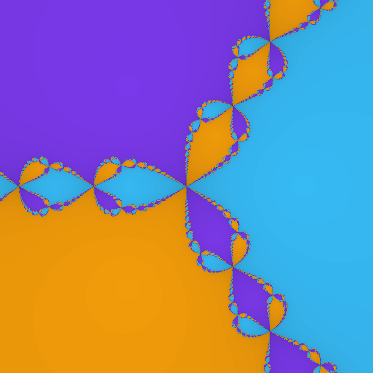
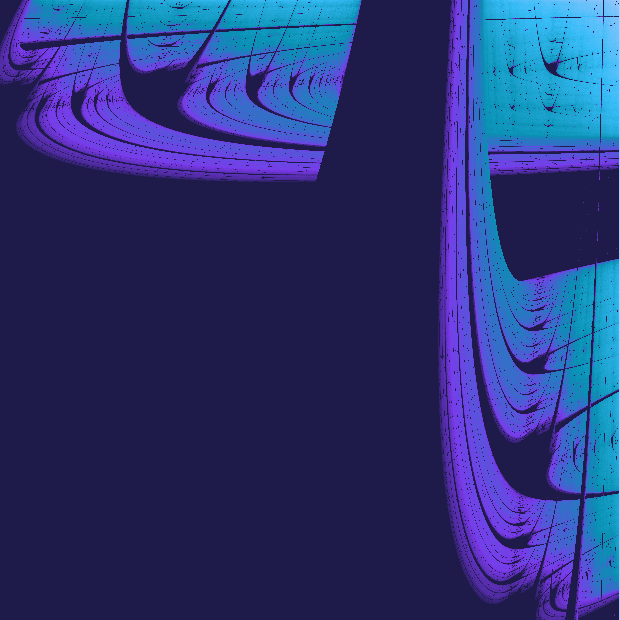
Hloubkový zoom a numerická přesnost
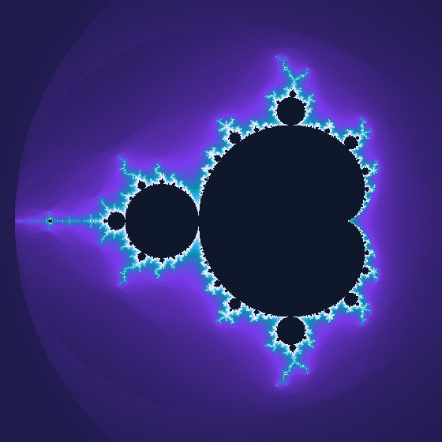
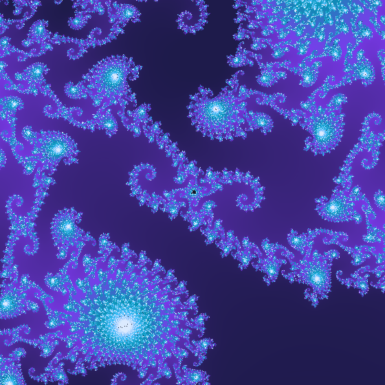
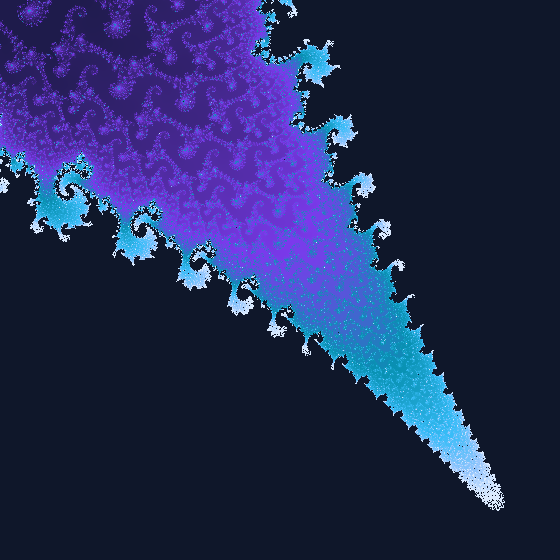
Obarvovací algoritmy
- Gradient podle počtu iterací — jednoduché, ale vznikají viditelné pruhy.
- Spojitý gradient — plynulý přechod díky zlomkové části iterace.
- Únikový úhel — směr, kterým bod z množiny „vystřelil“.
- Vzdálenost od hranice — odhad vzdálenosti pomocí derivace iterace.
// spojité barvení (smooth coloring)
logZn = log(zr*zr + zi*zi) / 2
nu = log(logZn / ln(2)) / ln(2)
mu = n + 1 - nu
color = palette(mu / maxIter)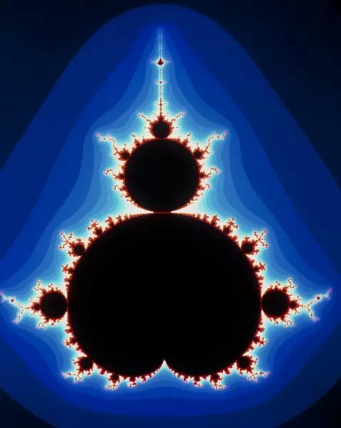

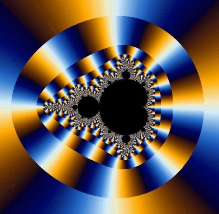
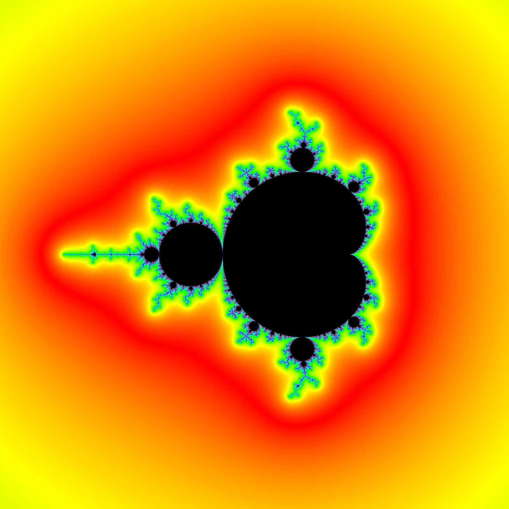
Fraktály na GPU
Fraktální dimenze
Fraktální dimenze dalších množin
Měření fraktální dimenze
IFS fraktály
Iterated Function Systems — fraktály generované soustavou rekurzivních funkcí.
Další příklady IFS fraktálů
Využití fraktálů
Fraktály v počítačové grafice a VFX
V produkci nejde o krásné obrázky, ale o parametrický obsah: jeden seed — celý svět.
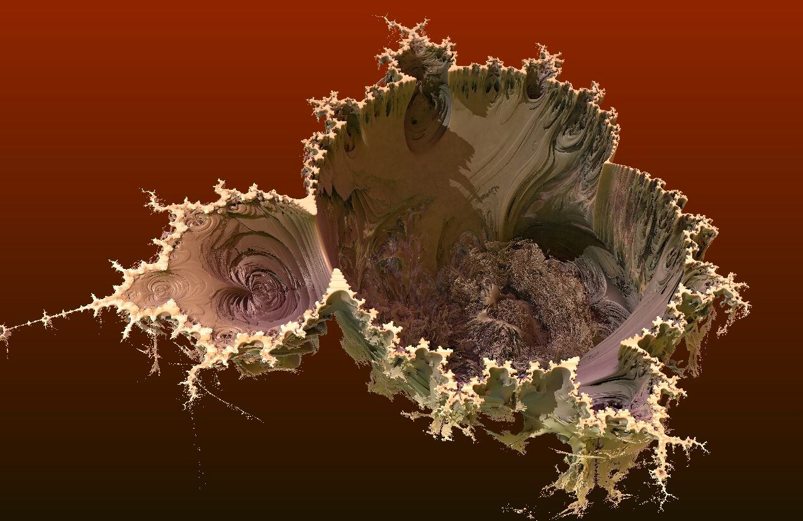
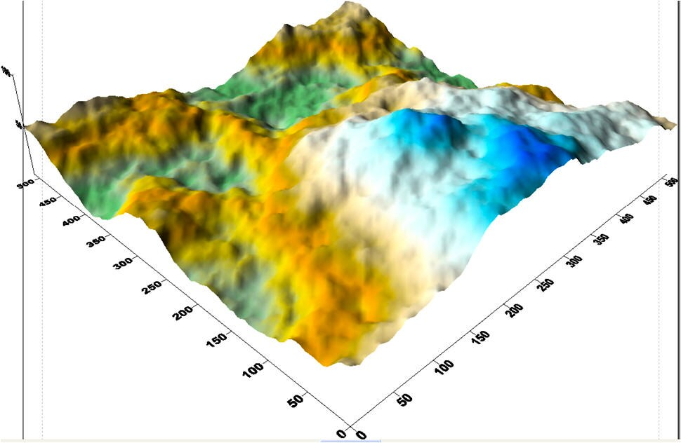
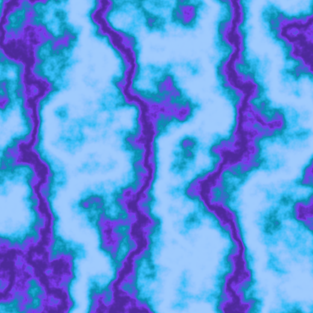
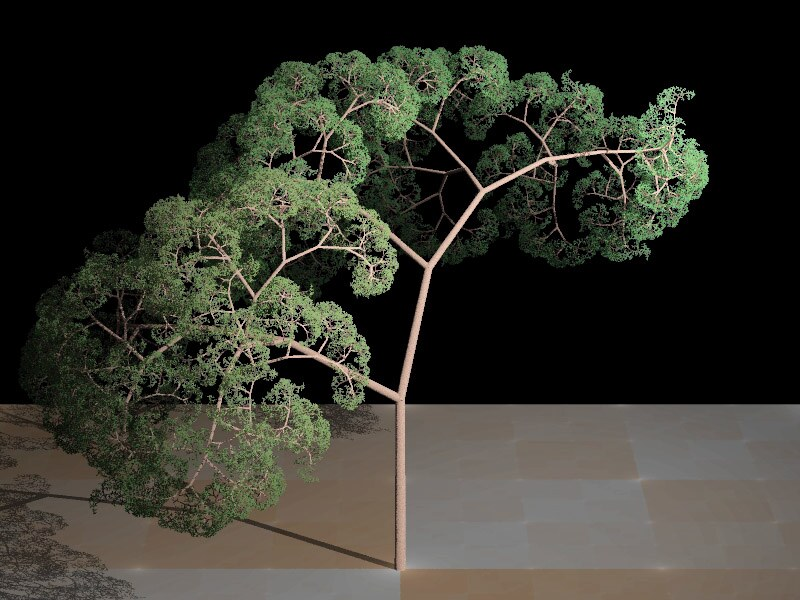
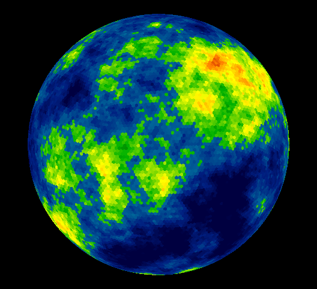
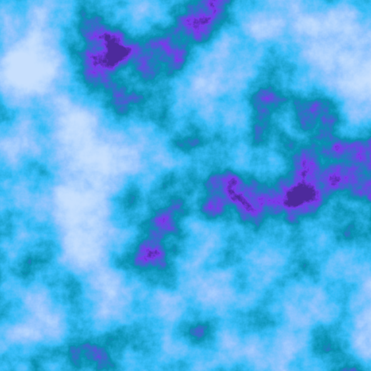
Fraktální komprese
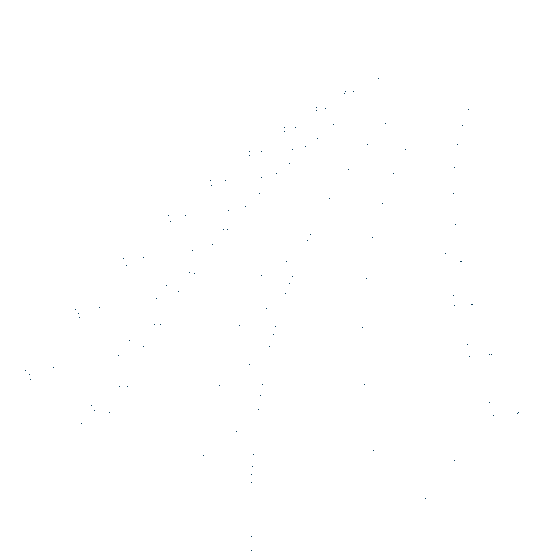
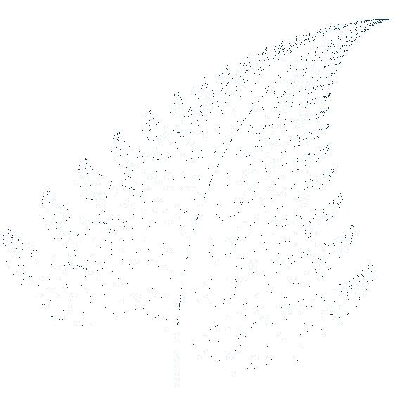
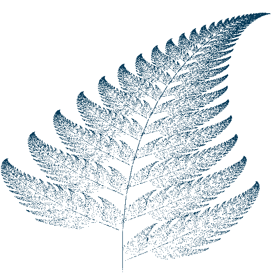
Fraktální stromy ve 2D
Robert Fathauer — matematik a umělec, který z fraktálních křivek staví stromy.
Od šumu k texturám
2D kopce
Generování povrchu
Fraktální mapy
Nástroje a kam dál
Po přednášce by mělo být jasné, kde si to zkusit — všechno níže je zdarma nebo ve studentské licenci.
| Nástroj | Co umí | Pro koho |
|---|---|---|
| Shadertoy | live GLSL v prohlížeči, Mandelbrot i Mandelbulb | rychlé pokusy |
| XaoS | real-time zoom, výuka | začátečníci |
| Fractint | klasika, palety, L-systémy | historie |
| Ultra Fractal | pokročilé formule, skripty | umělci |
| Mandelbulber 2 | 3D fraktály, ray marching, animace | 3D |
| Fragmentarium | GLSL skripty, distance estimation | vývojáři |
| Kalles Fraktaler | extrémní zoom (perturbace) | deep zoom |
| Blender / Houdini | terén, rostliny, VFX | produkce |